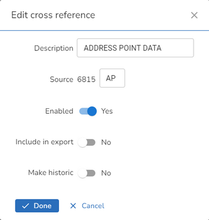

Cross Reference Lookups |
Top Previous Next |
|
Cross Reference Lookups may be maintained by clicking on the Lookup tables under Customisation in the Settings and selecting Cross References from the list. A list of Cross Reference Sources (or Back Office applications), to which you may wish to hold a Cross Reference to a Property, is displayed. Some entries are required to be in a certain format for the Hub and these are installed with the iManage Gazetteer database. Those entries that have a mandatory requirement to be exported to the Hub will also have the Include in export box enabled.  Note: You will not be allowed to edit any Cross Reference Source information that has been used in a record that has been exported to the hub. If you need to change the details then you will need to make the existing record Historic and create a new entry. Description A description for the application you wish to hold cross references to. Source This is used by the iManage Export application, iExchange and the SinglePoint LLPG Adapter. Enabled This box needs to be checked if you wish to use this Cross Reference Source when creating a Cross Reference. Include in export This entry is used to determine which cross reference sources are to be included in the iManage Export. Setting this to Yes will include all cross-reference information for the selected source in the Full and Partial NLPG Exports. Notes: •OneScotland SDTF 4.0 exports all Cross References regardless of this entry. •When running the iManage Export application you will be given the opportunity to select to "Export all BLPU Cross Reference records" if required. Make historic Setting the entry to be Yes will prevent the display of the entry in the drop down list for selection when creating a new Cross Reference but will leave the description for historic purposes. |